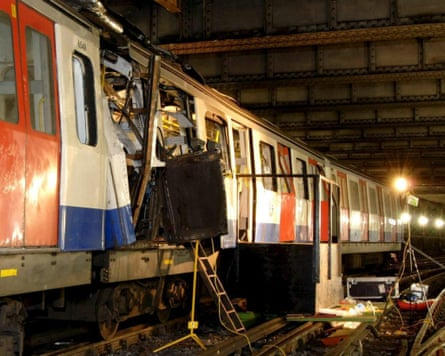
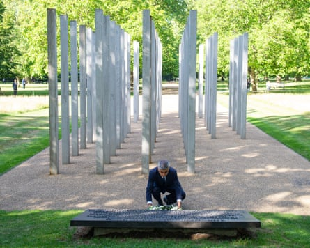

Foreign policy was a driver behind the 7 July 2005 attacks on London , with the atrocity leaving a “soul-destroying” legacy of a rise in hate, a former head of counter-terrorism has said.
Neil Basu said governments need to accept that foreign policy, such as Britain’s stance on the Israel-Gaza war, can have a direct effect on domestic security.
Accepting that link, he said, does not excuse violence but allows security professionals and the public to plan for any “blowback”.
The interview with the Guardian marked the 20th anniversary of the attacks on London’s transport network and the arrival of the modern age of Islamist mass murder in Britain.
Suicide bombers attacked three underground trains and a bus leaving 52 people dead and more than 750 injured. The shock was compounded when it was revealed that the atrocity was the work of British-born terrorists, supported by Osama bin Laden’s al-Qaida.
Neil Basu.Photograph: Antonio Olmos/The Guardian
Basu was head of counter-terrorism until 2021 and said the current level of attack threat to the UK was higher than in 2005. Other sources confirm that grim assessment.
Basu said the 7 July attacks contributed to a growth in suspicion of Muslims and damage to race relations that left people of colour fearful, reversing progress made since the 1980s.
They also came two years after the UK, then with Tony Blair as prime minister, joined in the US invasion of Iraq, on the false pretext that it had weapons of mass destruction.
Basu said: “A driver of the 7/7 attacks was foreign policy and Iraq, that does not excuse in any way what they did.
“That foreign policy decision has radicalised and made extremists of people who might not have been radicalised or extreme. And if they were on the pathway, it’s pretty much guaranteed …
“All terrorists will have a freedom fighter story. Bin Laden would have had a freedom fighter story. We might think it’s crap. We might think it’s self-justification, but he will have had a story about liberating his lands from the great invaders.”
The London Underground train that was bombed at Aldgate tube station on Thursday 7 July 2005.Photograph: EPA
Basu said it does not mean a terrorist threat should dictate foreign policy but governments need to be honest that such decisions may mean “you’ll be less safe when you’re at Westfield on a Saturday afternoon”.
The 7 July ringleader was Mohammad Sidique Khan , a teaching assistant and community worker, who was married and a father, and had been to a terrorist training camp in Pakistan.
In a suicide video after his death he attempted to justify the acts of murder by him and three others, claiming in a Yorkshire accent: “We are at war and I am a soldier. Now you too will taste the reality of this situation.”
Basu said: “There is no one path for any single individual to go down a terrorist route. There’s a multiplicity of paths, and one of them is: ‘I’m right, you’re wrong. Now that looks obscene to us … They are on God’s side. We are on Satan’s side.”
He said the backlash against Muslims in Britain , a fraying of the social fabric and rise of extremism are what the terrorists would have hoped for: “When terrorists hide behind a religion to commit an atrocity people blame every follower of the religion and the religion itself. We ought to stop doing that.
“That causes a fear and suspicion of people who don’t look like you, think like you, eat like you, worship like you. That has got worse, not better, and that has been caused exactly as terrorists want, by dividing a society by committing the shocking act.”
The mayor of London, Sadiq Khan, lays a wreath at the 7 July memorial in Hyde Park, London, on the 15th anniversary of the terrorist attacks.Photograph: Dominic Lipinski/PA
Progress in race relations, “a trajectory of tolerance” since the 1980s, had reversed after devastating terrorist attacks.
Basu said:“That’s what I think has been most soul-destroying … It has interrupted a trajectory of tolerance that I was becoming very familiar and happy with….
“It started with 9/11 … 7/7 accelerated that in this country. The relationship between races is worse today, or as bad today as it was in the 70s and 80s. That period of tolerance is over, and feels very much over.”
All Muslims being tarred with suspicion after terror attacks had caused wider damage.
Basu, who is mixed race, said: “How can that not possibly have set in a lot of people who were undecided about whether they wanted a multicultural, racially integrated society? How is that going to affect them? In exactly the way the terrorists wanted. It was going to make them say, we don’t want those people here.
“The zeitgeist has changed. If I as a 6ft, ex-police officer with quite a few skills and lots of mates and the ex-head of counter-terrorism feel more vulnerable today than I felt in pretty much most of my adult life, I think that there is a change.”
Basu said greater societal resilience was needed and that over the past 20 years the extremes had fed off each other, with events such as last summer’s riots part of a bitter legacy.
He said: “The ringleaders in those events who are causing the most anxiety you can trace way back to the ‘war on terror’. You know where [Tommy] Robinson came from, where the EDL [English Defence League] came from … you can trace all the way back to being mobilised by these horrific terrorist acts.
“I look at the rise of extreme rightwing terrorism in this country … of rightwing racist attitudes towards black and brown people , and I look at the rise in hate crime reporting … and can’t help but think we’ve got a vicious cycle that started when certain vicious groups started killing people on western soil. I think they were intending to do that, and they have succeeded.”
Basu said that when the police focus had to shift to terrorism after 2005, attempts to stamp out prejudice in the ranks waned, following the inquiry into the Stephen Lawrence murder and police errors that left his killers free .
He added:“Events like 7/7 in 2005 blew apart the whole post-Lawrence diversity agenda. It literally destroyed it.”
Robert Quick, head of counter-terrorism between 2008-09 said the number of counter-terrorism operations he was overseeing was up to 100, with about 2,500 people of concern. Now that figure is 600 operations with many more people suspected of potential involvement and support for terrorism.
Islamist attack plots dominate the work of counter-terrorism officials, followed by those from the far right and also those where there is no clear cause. In addition, there is now the threat from hostile states, mainly Iran and Russia.